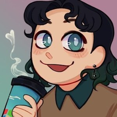

Sour Dani's Interweb Hyperlinks
A Source Engine Game Developer that drives Shork around the US.
Bluesky
Create your own .splo.ink BlueSky handle
Download Pre-Fortess 2
Pre-Fortress 2 Discord
test button
Personal GitHub
Pre-Fortress 2 GitHub
Meet The REAL Medic Kickstarter
Support me on Ko-fi
Support the development of Pre-Fortress 2 on Ko-fi
Steam (Not accepting friend requests)
Mostly Inactive YouTube
Meet The REAL Team Playlist
Pre-Fortress 2 YouTube Channel
Read my development blog